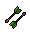
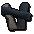
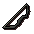
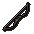
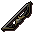
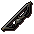
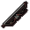

")
Dungeoneering - Fletching Tables
Fletching in Daemonheim is only accessible to RuneScape Members. Please subscribe to get this feature.
Introduction
To fletch arrows in Daemonheim, you must be raiding a dungeon on the following complexity level:
Complexity level 3+ - Making weapons
Click here to read more about Fletching in RuneScape.
Fletching Arrows
The process of fletching arrows is near identical to outside of Daemonheim. You will need branches, gained by woodcutting trees; a knife to wittle at the branches; feathers to attach to the shafts; and arrowheads to complete the arrow. Knives and feathers can be gained by buying them from the smuggler, while arrowheads are made using the Smithing skill.
You will be able to make a number of arrow shafts from each branch you have in your inventory. The number of arrow shafts is dependent on the wood you are fletching.
| Wood | Number made (per set of logs) |
Required Level | Experience Gained (per item) |
![[image]](../../img/main/kbase/skills/dungeoneering/items/wood/tangle_gum.gif) Tangle gum |
15 | 1  | 0.3 |
![[image]](../../img/main/kbase/skills/dungeoneering/items/wood/seeping_elm.gif) Seeping elm |
21 | 10 | 0.3 |
|  Blood spindle |
26 | 20 | 0.3 |
![[image]](../../img/main/kbase/skills/dungeoneering/items/wood/utuku.gif) Utuku |
32 | 30 | 0.3 |
![[image]](../../img/main/kbase/skills/dungeoneering/items/wood/spinebeam.gif) Spinebeam |
37 | 40 | 0.3 |
![[image]](../../img/main/kbase/skills/dungeoneering/items/wood/bovistrangler.gif) Bovistrangler |
43 | 50 | 0.3 |
![[image]](../../img/main/kbase/skills/dungeoneering/items/wood/thigat.gif) Thigat |
48 | 60 | 0.3 |
![[image]](../../img/main/kbase/skills/dungeoneering/items/wood/corpsethorn.gif) Corpsethorn |
54 | 70 | 0.3 |
![[image]](../../img/main/kbase/skills/dungeoneering/items/wood/entgallow.gif) Entgallow |
59 | 80 | 0.3 |
Grave creeper |
65 | 90 | 0.3 |
Fletching Bows
To fletch bows in Daemonheim, you must be raiding a dungeon on the following complexity level:
Complexity level 3+ - Making weapons
The process of fletching bows is near identical to outside of Daemonheim. You will need branches, gained by woodcutting trees; a knife to wittle at the branches; and bow strings to string the bows. Knives and bow strings can be gained by buying them from the smuggler.
| Bow | Required Level | Experience Gained (Unstrung) |
Experience Gained (For Stringing) |
Experience Gained (Completed) |
![[image]](../../img/main/kbase/skills/dungeoneering/items/weapons_ammo/tangle_gum_shortbow.gif) Tangle gum shortbow |
1 | 5 | 5 | 10 |
![[image]](../../img/main/kbase/skills/dungeoneering/items/weapons_ammo/tangle_gum_longbow.gif) Tangle gum longbow |
6 | 5.7 | 5.7 | 11.4 |
|  Seeping elm shortbow |
11 | 9 | 9 | 18 |
![[image]](../../img/main/kbase/skills/dungeoneering/items/weapons_ammo/seeping_elm_longbow.gif) Seeping elm longbow |
16 | 10.3 | 10.3 | 20.6 |
![[image]](../../img/main/kbase/skills/dungeoneering/items/weapons_ammo/blood_spindle_shortbow.gif) Blood spindle shortbow |
21 | 15 | 15 | 30 |
![[image]](../../img/main/kbase/skills/dungeoneering/items/weapons_ammo/blood_spindle_longbow.gif) Blood spindle longbow |
26 | 17.2 | 17.2 | 34.4 |
![[image]](../../img/main/kbase/skills/dungeoneering/items/weapons_ammo/utuku_shortbow.gif) Utuku shortbow |
31 | 23 | 23 | 46 |
|  Utuku longbow |
36 | 26.4 | 26.4 | 52.8 |
![[image]](../../img/main/kbase/skills/dungeoneering/items/weapons_ammo/spinebeam_shortbow.gif) Spinebeam shortbow |
41 | 33 | 33 | 66 |
|  Spinebeam longbow |
46 | 37.9 | 37.9 | 75.8 |
![[image]](../../img/main/kbase/skills/dungeoneering/items/weapons_ammo/bovistrangler_shortbow.gif) Bovistrangler shortbow |
51 | 45 | 45 | 90 |
|  Bovistrangler longbow |
56 | 51.7 | 51.7 | 103.4 |
![[image]](../../img/main/kbase/skills/dungeoneering/items/weapons_ammo/thigat_shortbow.gif) Thigat shortbow |
61 | 59 | 59 | 118 |
![[image]](../../img/main/kbase/skills/dungeoneering/items/weapons_ammo/thigat_longbow.gif) Thigat longbow |
66 | 67.8 | 67.8 | 135.6 |
![[image]](../../img/main/kbase/skills/dungeoneering/items/weapons_ammo/corpsethorn_shortbow.gif) Corpsethorn shortbow |
71 | 75 | 75 | 150 |
![[image]](../../img/main/kbase/skills/dungeoneering/items/weapons_ammo/corpsethorn_longbow.gif) Corpsethorn longbow |
76 | 86.2 | 86.2 | 172.4 |
![[image]](../../img/main/kbase/skills/dungeoneering/items/weapons_ammo/entgallow_shortbow.gif) Entgallow shortbow |
81 | 93 | 93 | 186 |
|  Entgallow longbow |
86 | 106.9 | 106.9 | 213.8 |
![[image]](../../img/main/kbase/skills/dungeoneering/items/weapons_ammo/grave_creeper_shortbow.gif) Grave creeper shortbow |
91 | 113 | 113 | 226 |
![[image]](../../img/main/kbase/skills/dungeoneering/items/weapons_ammo/grave_creeper_longbow.gif) Grave creeper longbow |
96 | 129.9 | 129.9 | 259.8 |
Fletching Staves
To fletch staves in Daemonheim, you must be raiding a dungeon on the following complexity level:
Complexity level 3+ - Making weapons
Should you wish to boost your magical abilities in combat, you might want to fletch yourself a staff. These are simple to make: get your hands on branches by woodcutting them from the trees of Daemonheim, and then use a knife on them to make staves. Knives can be bought from the smuggler.
| Staff | Required Level | Experience Gained (per item) |
![[image]](../../img/main/kbase/skills/dungeoneering/items/weapons_ammo/tangle_gum_staff.gif) Tangle gum staff |
8 | 9 |
![[image]](../../img/main/kbase/skills/dungeoneering/items/weapons_ammo/seeping_elm_staff.gif) Seeping elm staff |
18 | 16.2 |
![[image]](../../img/main/kbase/skills/dungeoneering/items/weapons_ammo/blood_spindle_staff.gif) Blood spindle staff |
28 | 27 |
![[image]](../../img/main/kbase/skills/dungeoneering/items/weapons_ammo/utuku_staff.gif) Utuku staff |
38 | 41.4 |
![[image]](../../img/main/kbase/skills/dungeoneering/items/weapons_ammo/spinebeam_staff.gif) Spinebeam staff |
48 | 59.4 |
![[image]](../../img/main/kbase/skills/dungeoneering/items/weapons_ammo/bovistrangler_staff.gif) Bovistrangler staff |
58 | 81 |
![[image]](../../img/main/kbase/skills/dungeoneering/items/weapons_ammo/thigat_staff.gif) Thigat staff |
68 | 106.2 |
![[image]](../../img/main/kbase/skills/dungeoneering/items/weapons_ammo/corpsethorn_staff.gif) Corpsethorn staff |
78 | 135 |
![[image]](../../img/main/kbase/skills/dungeoneering/items/weapons_ammo/entgallow_staff.gif) Entgallow staff |
88 | 167.4 |
![[image]](../../img/main/kbase/skills/dungeoneering/items/weapons_ammo/grave_creeper_staff.gif) Grave creeper staff |
98 | 203.4 |
Fletching Traps
To fletch traps in Daemonheim, you must be raiding a dungeon on the following complexity level:
Complexity level 5+ - Hunting
To gain hides that can be used to make ranged gear, you will need to skin a bovimastyx: a docile, cow-like creature that paces about Daemonheim. There are two methods of doing this: the first is by simply killing it, but this will only ever produce one usable hide; the second is by hunting it, using a fletched trap to snare the bovimastyx.
To make a trap, you will only need a branch and a knife (branches can be gained by woodcutting in Daemonheim, a knife can be bought from the smuggler). Having used the knife on the branches, you will be give the opportunity to fletch a trap, as long as you have the Fletching level required to make it.
| Traps | Required Level | Experience Gained (per item) |
![[image]](../../img/main/kbase/skills/dungeoneering/items/traps/tangle_gum_trap.gif) Tangle gum trap |
3 | 12 |
![[image]](../../img/main/kbase/skills/dungeoneering/items/traps/seeping_elm_trap.gif) Seeping elm trap |
13 | 21.6 |
![[image]](../../img/main/kbase/skills/dungeoneering/items/traps/blood_spindle_trap.gif) Blood spindle trap |
23 | 36 |
![[image]](../../img/main/kbase/skills/dungeoneering/items/traps/utuku_trap.gif) Utuku trap |
33 | 55.2 |
![[image]](../../img/main/kbase/skills/dungeoneering/items/traps/spinebeam_trap.gif) Spinebeam trap |
43 | 79.2 |
![[image]](../../img/main/kbase/skills/dungeoneering/items/traps/bovistrangler_trap.gif) Bovistrangler trap |
53 | 108 |
![[image]](../../img/main/kbase/skills/dungeoneering/items/traps/thigat_trap.gif) Thigat trap |
63 | 141.6 |
![[image]](../../img/main/kbase/skills/dungeoneering/items/traps/corpsethorn_trap.gif) Corpsethorn trap |
73 | 180 |
![[image]](../../img/main/kbase/skills/dungeoneering/items/traps/entgallow_trap.gif) Entgallow trap |
83 | 223.2 |
![[image]](../../img/main/kbase/skills/dungeoneering/items/traps/grave_creeper_trap.gif) Grave creeper trap |
93 | 271.2 |

More articles in
Dungeoneering
|
|
|
Further Help
If this article does not help you, you may find the following sections of the RuneScape site helpful:
|
|